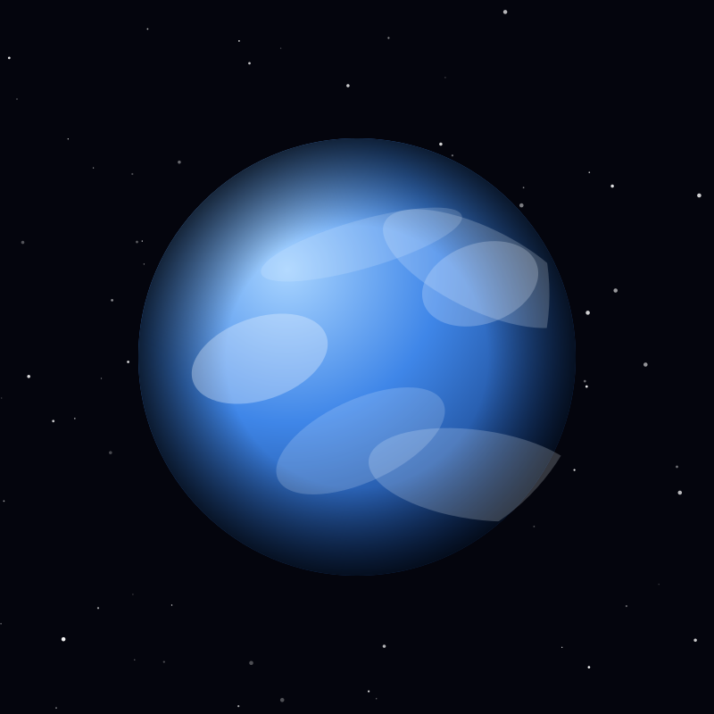

Planet
Earth
The only world known to harbour life, with liquid water oceans covering 71 percent of its surface and a magnetic field that shields it.
Object 01 of 26

Key facts
- Distance from Earth
- 0 km
- Radius
- 6,371 km
- Mass
- 5.97 × 10²⁴ kg
- Surface gravity
- 9.81 m/s²
- Orbital period
- 365.25 days
- Surface temperature
- -89°C to 57°C
- Atmosphere
- 78% nitrogen, 21% oxygen
- Moons
- 1 (The Moon)
Overview
Earth is the third planet from the Sun and the only object confirmed to harbour life. It formed about 4.54 billion years ago from the dust and gas of the young solar system, and it has been geologically active ever since — a planet that continually recycles its own crust rather than preserving it.
Roughly 71 percent of the surface is covered by liquid water, a feature no other world in the solar system shares. Earth sits inside the Sun's habitable zone, where pressures and temperatures allow water to exist as solid, liquid and gas at once — the balance that made its biosphere possible.
Atmosphere & Climate
The atmosphere is 78 percent nitrogen and 21 percent oxygen, with trace argon and carbon dioxide. Oxygen is itself a biological product: photosynthetic organisms transformed the atmosphere over billions of years. An ozone layer in the stratosphere absorbs most incoming ultraviolet radiation.
A natural greenhouse effect keeps the average surface temperature near 15°C; without it the planet would sit around -18°C. Circulation between equator and poles drives weather, while the jet stream steers storm systems from west to east through the mid-latitudes.
Oceans & Life
The oceans hold 97 percent of Earth's water and reach 10,935 metres deep in the Challenger Deep of the Mariana Trench. Hydrothermal vents on the seafloor support ecosystems that run on chemical energy rather than sunlight, showing that life does not require the surface at all.
Life spans the whole system, from microbial mats in Antarctic ice to organisms drifting in the stratosphere. That range is what makes Earth the reference point in the search for life elsewhere.
A Dynamic World
Earth's outer shell is divided into tectonic plates that collide, split apart and slide past one another, building mountains, opening ocean basins and venting carbon dioxide through volcanoes. The same cycle regulates the climate over millions of years.
A liquid iron outer core generates a global magnetic field that deflects the solar wind, and an axial tilt of 23.4 degrees produces the seasons. The Moon stabilises that tilt, keeping climate swings far milder than they would otherwise be.